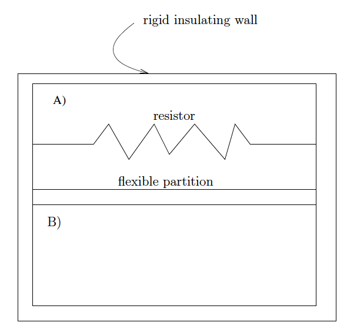

Adiabatic Box - Solution#
Download link: adiabatic_box_solution.ipynb
Notebook practice#
Write a function called “eqstate” that calculates the density of dry air. Use it to find the dry air density at a pressure of 80 kPa and temperatures of temp=[270, 280, 290] K
def eqstate(Temp,Press):
dens = xxx
return dens
Answer#
import numpy as np
Rd = 287 #J/kg/K
def eqstate(temp,press):
"""
Parameters
----------
temp: float
temperature (K)
press: float
press (Pa)
Returns
-------
dens: float
dry air density (kg/m^3)
"""
dens = press/(Rd*temp)
return dens
dots = '*'*60
the_temps = np.array([270, 280, 290]) #K
press = 80.e3 #Pa
#
# loop over temps
#
for temp in the_temps:
dens = eqstate(temp,press)
output = f"""
{dots:}
At pressure {press:6.0f} Pa and temperature {temp:6.2f} K
the air density is {dens:6.3f} kg/m3
{dots:}
"""
print(output)
************************************************************
At pressure 80000 Pa and temperature 270.00 K
the air density is 1.032 kg/m3
************************************************************
************************************************************
At pressure 80000 Pa and temperature 280.00 K
the air density is 0.996 kg/m3
************************************************************
************************************************************
At pressure 80000 Pa and temperature 290.00 K
the air density is 0.961 kg/m3
************************************************************
Assignment 1 Solution#
The figure below represents an insulated box with two compartments A and B, each containing dry air. They are separated by an insulating and perfectly flexible wall, so that the pressure is equal on the two sides. Initially each compartment measures one \(m^3\) and the gas is at a pressure of 100 kPa and a temperature of 273 K. Heat is then supplied to the gas in box A using a resistor, until the pressure in both compartments rises to 300 kPa. Calculate:
The final temperature \(T_B\) (K) in box B
The time integrated work (\(J\,kg^{-1}\)) performed on the air in B by the membrane.
The final temperature \(T_A\) (K) in box A
The time-integrated heating rate (\(J kg^{-1}\)) of the gas in box A.
Hint: use the fact that entropy (and therefore \(\theta\) ) is conserved for an adiabatic process and therefore can’t change in compartment B, and that the total volume of the combined compartments A and B has to stay constant at 2 \(m^3\).
{kind=link}

Fig. 1 Two box setup#
First write two convenience functions to calculate temp given \(\theta\)#
Test them by going from temp to \(\theta\) then back to temp
def theta_from_temp(temp,press):
"""
Input: temp (K)
press (kPa)
Output: theta (K)
Thompkins eq. 1.38
"""
cpd=1004. #J/kg/K
Rd = 287. # J/kg/K
p0 = 100 #kPa
theta = temp*(p0/press)**(Rd/cpd)
return theta
def temp_from_theta(theta,press):
"""Input: theta (K)
press (kPa)
Output: temp (K)
"""
cpd=1004. #J/kg/K
Rd = 287. # J/kg/K
p0 = 100 #kPa
temp = theta/((p0/press)**(Rd/cpd))
return temp
theta = theta_from_temp(273.,100.)
Tinitial = temp_from_theta(theta,100.)
print(f'test roundtrip for theta: theta={theta} K, Tinitial={Tinitial} K')
test roundtrip for theta: theta=273.0 K, Tinitial=273.0 K
1. Answer: The final temperature \(T_B\) (K) in box B#
Use the fact that \(\theta\) is constant in box B
Tfinal = temp_from_theta(theta,300.)
print(f"at press=300 kPa, the temperature in B is {Tfinal:8.3f} K")
at press=300 kPa, the temperature in B is 373.724 K
2. Answer: Work done by A on B#
\(w = \int w_t dt = \int p_A d v_A\) where w is positive for work done on B and as in Thompkins, \(v = 1/\rho = \text{Volume/mass}\)
(we know A is expanding, so \(dv_A > 0\))
The temperatures, pressures and densities are all initially the same in A and B, and since
\(v = 1 / \rho\) that means that \(v_A =v_B\) initially.
The mass in each compartment is \(\rho_A \times 1\ m^{3}\) = \(\rho_B\) \(\times\) 1 \(m^{3}\) (since the volumes in each compartment are 1 \(m^3\)).
The total volume (\(V_T\)) doesn’t change, so \(V_A + V_B = V_T = 2\ m^3\) and \(dV_A = - dV_B\).
Since the mass in each compartment is also constant that means \(dv_A = - dv_B\).
Look at Thompkins 1.21 (using my notation):
\(q_t = \frac{du}{dt} + w_t = \frac{du}{dt} + p\frac{dv}{dt} = c_v \frac{dT}{dt} + p \frac{dv}{dt}\) = 0 for compartment B
So for compartment B: \(\int du = - \int w_t dt = - \int_{initial}^{final} c_v \frac{dT}{dt} dt = - c_v (Tfinal - Tinitial)\)
The work done by B is a negative number because it is undergoing compression, so \(d v < 0\). But since the pressure is always equal across the compartments we know that work_done_by_A = - work_done_on_B
Now put in the numbers
cv = 718 #J/kg/K
work_done_on_B = cv*(Tfinal - Tinitial)
print(f"work done on B by A= {work_done_on_B:8.3e} J/kg")
print(f"work done on A by B= {-work_done_on_B:8.3e} J/kg")
work done on B by A= 7.232e+04 J/kg
work done on A by B= -7.232e+04 J/kg
3. Answer: Final temperature of A#
We can get this from the equation of state (Thompkins 1.7) if we can figure out the density of A. From the equation of state:
\(pV/T = n R_* = constant=C\).
Using our intial values of \(p=1 \times 10^5\ Pa\), V=\(1\ m^3\), T=273 K, \(C=10^5/273 = p_B V_B/T_B\).
C = 1.e5/273 #J/K with V=1 m^3
p_B=3.e5 #Pa
T_B = Tfinal
V_B = C*T_B/p_B
print(f"final volume of B = {V_B:7.3f} m^3")
V_A = 2 - V_B #total volume of 2 m^3 is conserved
print(f"final volume of A = {V_A:7.3f} m^3")
final volume of B = 0.456 m^3
final volume of A = 1.544 m^3
Get temperature of A from the equation of state#
4a. Answer: Total heating of A#
p_A = 3.e5 #Pa
T_A = V_A*p_A/C
print("final Temperature of A= {:7.3f} K".format(T_A))
final Temperature of A= 1264.276 K
Using the 1st law we’ve got:
\(\int q_t dt = \int \frac{du}{dt} dt + \int w_t dt = c_v (Tfinal - Tinitial)\) + work_done_on_B
heating_of_A = cv*(T_A - Tinitial) + work_done_on_B
print(f"heating of A = {heating_of_A:7.3e} J/kg")
heating of A = 7.841e+05 J/kg